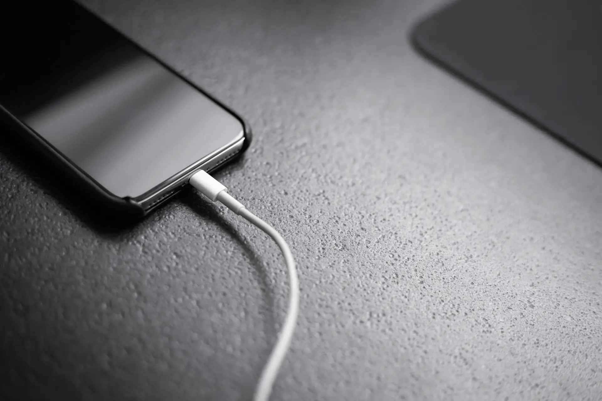

PowerHive
PowerHive is a power bank rental service located in the Netherlands. Since 2025 an enthusiastic team is dedicated to create a more connected community with a network of power bank stations across the country. So, wherever you are, whenever you need, PowerBank is there to provide you with a portable power bank which you can return wherever you want.
Explore our Vision
Accessibility

In today's fast-paced world, staying connected is essential, yet dead batteries remain a common frustration. Whether it's a traveler at the airport, a student in a café, or a driver relying on GPS, access to power is crucial. To solve this, a growing network of power bank stations is being placed in key locations nationwide, ensuring that anyone can quickly grab a charge when needed. As more stations appear in malls, transit hubs, and restaurants, staying powered up will become easier than ever, keeping people connected wherever they go.
Connectivity
Staying connected is more important than ever, but a dead battery can cut you off from work and friends. To solve this, our affordable power bank stations are being placed in key locations, allowing you to rent a charge on the go. Whether you're commuting, traveling, or out for the day, these convenient stations ensure you have access to power. No more searching for outlets or carrying bulky chargers—just grab a power bank, stay connected, and return it when you're done. As the network grows, staying online will be easier and more accessible than ever
Reliability
Running out of battery at a crucial moment can be frustrating, but having a reliable charging solution makes all the difference. With a trusted power bank rental service, you can always count on having access to a charge when you need it most. Fully operational stations are placed in busy areas, ensuring that whether you're commuting, working, or traveling, you won't be left without power. No more worrying about low battery warnings, just grab a power bank and charge up. As the network of stations grows, you can rely on having power within reach.
The Free-Floating System
Charging on the go should be as flexible as your lifestyle, which is why the free-floating system makes renting a power bank easier than ever. No need to return it to the same place, simply grab a power bank from one station, use it while you’re out, and drop it off at any other station when you’re done. Whether you're traveling, running errands, or meeting friends, this system ensures you stay powered up without the hassle of tracking down a return point. With more stations being added, staying charged is now more convenient and stress-free than ever